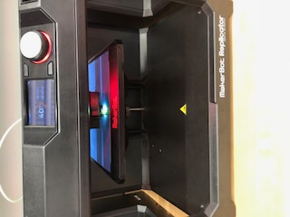
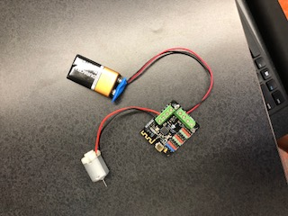

My project was a car powered by the bluetooth DFrobot. I used the laser cutter to make the car's body. The axis and wheels were 3D printed. The DFrobot is an Arduino project so I downloaded the code into the Arduino program. Also, I downloaded the remote control app to control the car. Unfortunately, the car did not work. For some reason, the motor would not turn even though it showed that the motor should be turning on the computer. Despite this mishap, I am still determined to make it work and will look into what went wrong over the summer.
3D Printer
Laser engraver
Arduino BLE Romeo DFrobot
Hot Glue
Motor
Batteries
I spent multiple hours on this project, both working on it and making a plan for it.
Laser Engraver:
Type here
Step 1: I decided what project I wanted to do: A car powered by Arduino.

Step 2: I laser printed a box to be the body of my car. I used Makercase (See Rotation 4) to make the box and then cut it out on the laser engraver.
Step 3: I 3D printed the wheels and Axles. I made the design using CAD. I used the program Fusion 360 to make the design, then I uploaded the stl file into makerbot. Next I printed it on the 3D printer.
Wheel File

Step 4: I coded the DFrobot. Unfortunately, even though the computer said it was working, the motor would not turn. Mr. Gerber and I tried changing the code, the motor, and the power source, but nothing worked.
Step 5: I put the car together. I glued the wheels to the axles and put the axis through the car body. Next I put the Arduino in the car body and the motor into the front wheel.